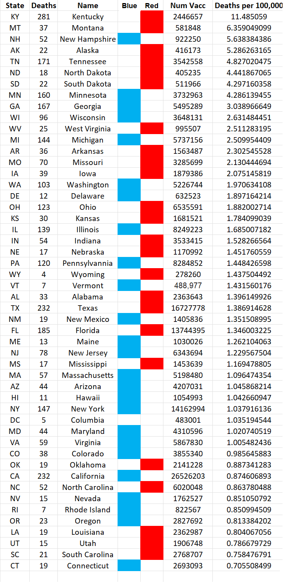

Data from VAERS for 2021 USA for Pfizer, Moderna and Janssen vaccines
Column 2 = Number of deaths following vaccination
Column 6 = Number of people vaccinated
Column 7 = Deaths per 100,000 vaccinated
home | Booster Warnings by Month | Moderna | Pfizer | Janssen | Moderna (outside USA) | Pfizer (outside USA) | Janssen (outside USA) | Severe | Symptom | Treatment | Children | Clusters | All or Nothing | Time till onset | Gender | Geography | States | Causality | Japan | Sweden | Video Library | Case Reports | Lot Sizes | Lot Expiry Dates | Whistle Blowers | Data Cleaning | Background | Download Source Code | Donate
If this site is slow loading that's because over 1 million people are accessing it right now. Please use auxillary site HowBadisMyBatch.com which has been set up to cope with this overload. Thankyou.
Variation in Toxicity of Vaccine Batches Across Different States of the USA
Data Sources
Observations
Safety Signal
Some states, in particular Kentucky, Montana, Alaska, Tennessee, North Dakota and South Dakota are experiencing 4 x, 5 x, 6 x or even 11 x the number of deaths per 100,000 vaccinated compared to other states. Such a situation should be raising a safety signal, and requires investigation. The higher death rate in these states following vaccination suggests that they may be receiving more toxic batches, or being administered to more vulnerable people.

Data from VAERS for 2021 USA for Pfizer vaccine only
Column 2 = Number of deaths following vaccination
Column 6 = Number of people vaccinated
Column 7 = Deaths per 100,000 vaccinated
Repeating the Analysis for All Covid Vaccines
Based on the findings for Pfizer, I decided to repeat the analysis, but this time for all of the covid vaccines together. Here is what I found.
Data from VAERS for 2021 USA for Pfizer, Moderna and Janssen vaccines
Column 2 = Number of deaths following vaccination
Column 6 = Number of people vaccinated
Column 7 = Deaths per 100,000 vaccinated
A clearer pattern emerges. Red states are almost completely clustered at the top, and blue states at the bottom. Number of deaths per 100,000 vaccinated is much higher for red states.
The only possible reasons for this are either -
Testing the Age and Frailty Factors
I will have to investigate this further - by analysing the spread of ages for vaccinated between states. VAERS also provides a list of comorbidities for each recipient's report, so I can test for frailty also.
(Note: If age and frailty are responsible for the increased deaths following vaccination in red states, then this is an admission that the aged and frail must be more vulnerable to the fatal effects of the vaccine - since red states have upto 19 x the fatality rate. And if the aged and frail are more vulnerable to this medication then they should be protected from it, and exempt from it. If any demographic is excessively vulnerable to a medication, then they should not be exposed to it - continuing the medication betrays an intent to harm.)
Testing the Batch Factor
If I take the 30 Moderna batches generating the most death and disability, I could see how they are distributed between red and blue states.
Created by Craig Paardekooper ©2021